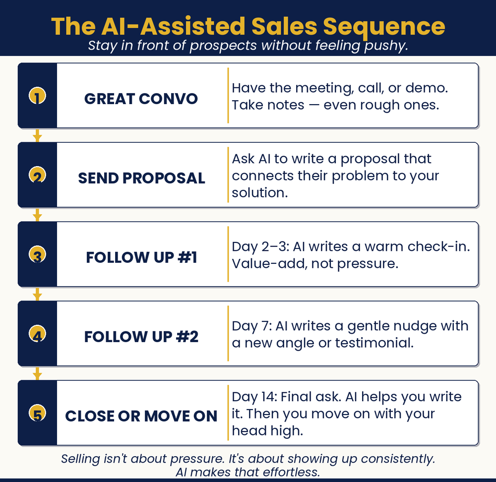

Chapter 17: Close More, Worry Less
Let AI Chase. You Close.
Why do my best prospects keep going cold?

Chapter Recap
Most sales are won after the fourth or fifth follow-up. Most owners quit after one. That gap is lost money. This chapter gives you a simple five-touch follow-up plan. Each message adds value instead of nagging. AI writes them in your voice in seconds. You can even set them to run on autopilot with your CRM. Steady, friendly follow-up turns cold leads into closed deals.
In This Chapter
- The Non-Salesy Approach
- The Five-Touch Follow-Up Sequence
- AI-Assisted Proposal Writing
- CRM + AI: Your Follow-Up System on Autopilot
- Reading the Room: Tailoring Your Approach
Grab-and-Go Prompts
1. Touch 1: The Simple Check-In — Day 1, confirm receipt
Hi [Name], just wanted to make sure you received the proposal I sent over. Happy to answer any questions or walk you through anything. Let me know how I can help.
2. Touch 3: The Specific Question — surface objections
Have you had a chance to review? I wanted to ask specifically, is there anything about the scope or investment you’d like to adjust? I’m happy to put together an alternative if that would help.
3. Touch 4: The Light Deadline — gentle urgency
I have a slot available starting [date] and wanted to check in before it fills up. Are you still interested in moving forward?
4. Touch 5: The Graceful Close — leave the door open
I haven’t heard back and don’t want to keep filling your inbox. I’ll close out this file on my end, but if timing changes and you’d like to revisit, I’m always happy to pick up where we left off.
5. Read a Prospect’s Style — match how they communicate
You are a communication style analyst. Analyze the communication style of the person who wrote these emails. Are they more direct or relationship-oriented? More formal or casual? More detail-focused or big-picture? What does this suggest about how I should approach my follow-up with them?
Download
- 📄 Follow-Up Sequence Template — the complete five-touch sequence, ready to customize for your business.
Your Move
Choose your most promising current prospect. Ask AI to write your next follow-up email; provide the context of your relationship, where they are in the process, and what you want the email to accomplish. If you’ve already followed up twice without a response, map out touches 3, 4, and 5 using the framework above. Then execute them.

Read the full chapter in
AI Jiu-Jitsu: Run Circles Around the Big Guys, the book this toolbox comes from.
Prefer to have it done for you? BreakThru Growth can build and automate your follow-up sequences for your business → BreakThruGrowth.com